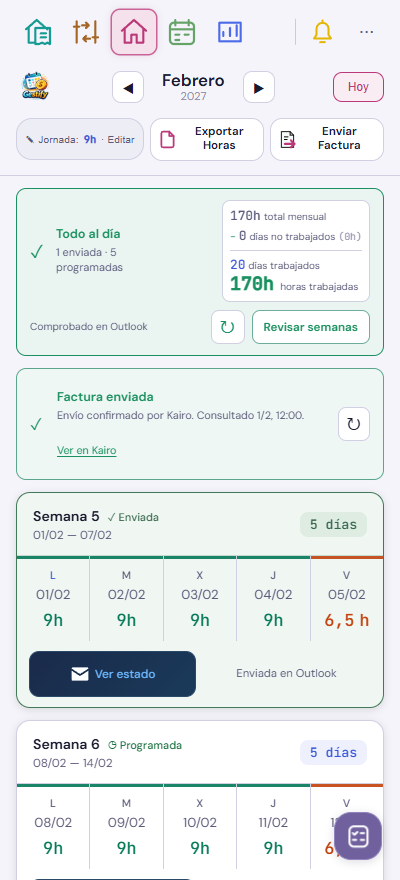
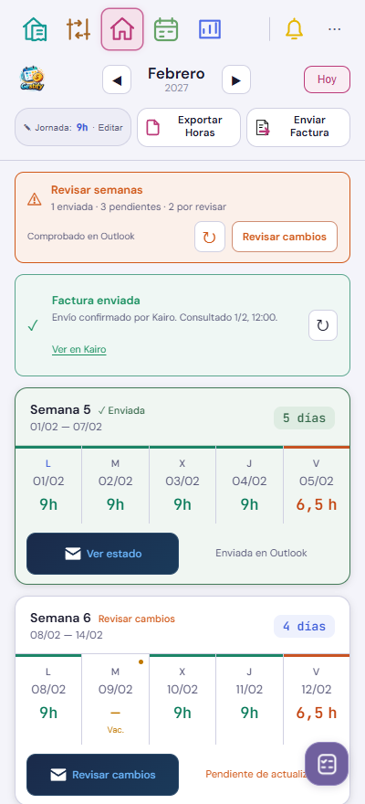
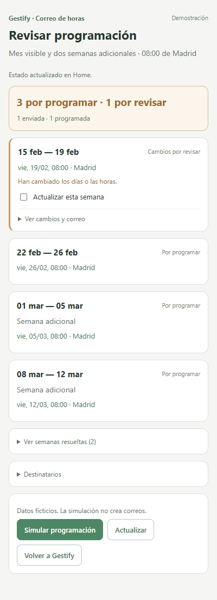

Lo que verás de un vistazo
El panel superior indica si todo está al día, si quedan semanas pendientes o si hay cambios por revisar. Cada tarjeta conserva su estado y muestra la fecha de su programación.
↻ Comprobar Outlook actualiza Home y vuelve automáticamente. Programar pendientes abre una confirmación breve con las semanas nuevas o modificadas; las resueltas y el detalle del correo quedan plegados.
Las capturas usan exclusivamente datos ficticios. El resumen de horas mantiene su lugar a la derecha.


Fecha de programación
Siempre a las 08:00 de Madrid, de lunes a viernes.
| Semana | Se programa para |
|---|---|
| Lunes a jueves trabajados; viernes de vacaciones | Jueves |
| Toda la semana de vacaciones | Viernes |
| Lunes a jueves de vacaciones; viernes festivo | Jueves |
| Los cinco días festivos | Queda pendiente para decidir |
Si la fecha prevista ya pasó, también queda pendiente. Se conserva el requisito de resolver la semana anterior y el alcance del mes visible más dos semanas adicionales.
Ver la confirmación simplificada
Solo muestra las semanas que requieren una decisión. Los cambios de un correo existente necesitan marcar su casilla; los ya enviados o programados se conservan.

Esta demostración no conecta con Outlook y no crea correos.
Datos ficticios.
Comprobaciones
Home compara días, horas y fecha con el correo programado. Una edición local deja de aparecer como sincronizada hasta que coincida de nuevo. Comprobar no programa correos; confirmar sigue verificando los datos y evitando duplicados.
No se necesita el teléfono para estas pruebas de interfaz. Solo se recapturan las vistas de Home afectadas; se conservan las demás capturas y revisiones del mapa.